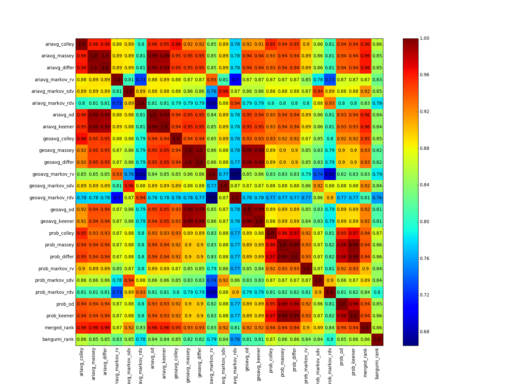

使用 rankit 构建更科学的排名
rankit 是一个使用线性代数和最优化理论为基础的常见排名算法库。这个库是我写的。我说“常见”其实对于绝大部分人来说根本就闻所未闻，但是对于专门研究排名的研究者来说，这里面包含的算法都是比较基础的。自从阅读了一本介绍排名的书籍《谁排第一？关于评价和排序的科学》之后，我觉得很有必要把这里面的宝藏介绍给对此一无所知的研究者。作为一个做与机器学习相关研究的研究生，竟然除了 PageRank 和 HITS 其他排名算法一个都没有听说过——课上不教，研究也涉及不到——因为生活中应用这些排名算法的场景，实在是很少接触到。然而，这些排名算法正在美国的体育比赛排名中大行其道。在那本书中，大部分案例直接来源于美国的橄榄球比赛排名。
然而要我把这本书里面所有的算法都介绍出来，实在是一件难事，一是有侵犯版权的嫌疑，二是其中涉及到大量的数学推导。我在此也只能简单地说一下。每一个排名（rank）由一个既定的评分（rating）产生，评分可以被解释为被排名对象的实力。在一定数学模型的指导下，被排名对象产生了比赛结果。这时候，可以看作 rating 这一因素导致了外在的比赛结果的观测值，这和 state 与 observation 的关系是一样的。根据不同的数学模型，就有了不同的 rating 算法。另外还有一个排名算法不依靠于 rating 数值，它试图给出一个 ranking，使得该排名与比赛的结果最为相符，说白了就是 linear ordering problem.
那么这种排名算法对我们有什么启示呢？现实生活中好像没有多少排名问题能够用被排名对象之间的比赛来表达啊。搜索引擎的网页排名能用 in-link 和 out-link 表达网页之间的关系，但是网页之间怎么进行比赛呢？事实上，这本书能够拓宽人的眼界的地方就在于此。如果在一个网页排名结果中，网页点击量的大小可以视作在这一场比赛中的结果。网页流量的大小也是网页实力的一个外在特征。在商品排名中，同时购买两件商品的人的评分综合也可以被视为两件商品比赛的结果。事实上，我们应该抛弃“比赛”这种概念，对两个排名对象在同等条件下比较的结果进行 fitting 要远远稳定于计算一个平均分，或是加权平均的结果。
小白怎样使用 rankit？
rankit 提供了 Converter，只要用户能提供排名对象的每一轮的比赛结果（用 pandas.DataFrame 表示并包含特定的 columns），就能够为后续的算法计算出矩阵。在不同的数学模型下，需要的观测值就会有所不同。每一个算法都有它的物理意义，那么使用某一个算法要使用与其物理意义相对应的矩阵。比如说对于 MarkovRank 来说，这种算法需要表示排名对象之间相互投票的结果。我在 rankit 里面专门提供了 RateDifferenceVoteMatrix，SimpleDifferenceVoteMatrix 和 RateVoteMatrix 把观测到的评分结果表示成这样的矩阵。对于算法适用于什么样的矩阵这个问题，我在 rankit 的 GitHub 主页上面已经给出了参考表格。
rankit 还提供了排名融合的算法，排名融合能够使多种算法的排名更加稳定。用户也可以自行构建排名加入排名融合器，生成融合后的排名。另外，如果要比较排名之间的结果，rankit 还提供了两种测度描述排名列表之间的差距。
尽管我接口做得比较人性化了，我还是希望有一定背景知识的人去操纵这些算法。
为 Bangumi 动画排名！
长久以来，Bangumi 用户对 Bangumi 的动画排名争论不休[1][2]。由于 Bangumi 网站的高质量，某些别有用心人士试图通过刷分提高某些动画的排名或降低某些动画的排名，达到自己不可告人的宗教和政治目的[3][4][5]。除此以外，有用户建议使用更为细致化的排名系统[6][7]，但是所有这些讨论都没有超出统计学的范畴，最多也只是在平均分上做些加加减减，或是玩一些加权的把戏。一个综合的讨论收录可以参考[8].
我们提出了一种全新的基于不同数学模型的排名方法，这些排名方法通过比较每两部作品的表现评分。同时看过两部作品的用户，我们可以计算他们为这两部作品评分的算术平均分、对数几何平均分和倾向性概率，从而生成三种作品间两两比较的实力数据。接着，对于每一种生成方法，我们使用八种不同的算法对作品进行排名。这些排名算法由 rankit 提供技术支撑。对于生成的 24 种排名，我们使用 Borda Count 融合所有排名，生成最终的动画排名。这 8 种算法分别是：
- Colley Rank (colley)
- Massey Rank (massey)
- Difference Rank (differ)
- Markov Rank, using rate vote matrix as input (markov_rv)
- Markov Rank, using rate difference vote matrix as input (markov_rdv)
- Markov Rank, using simple difference vote matrix as input (markov_sdv)
- Offence-defence Rank (od)
- Keener Rank (no bias) (keener)
使用基于算术平均的排名使用 ariavg 做前缀，使用基于对数几何平均的排名使用 geoavg 做前缀，使用概率的排名我们使用 prob 做前缀。我们把最后的排名记作 merged_rank，把 Bangumi 原始排名记作 bangumi_rank，并对每一对排名计算 Kendall Measure，我们得到以下矩阵：

如果两个排名的 Kendall Measure 等于 1，说明两个排名的相似度比较大。如果越趋近于 -1，则两个排名完全相反。从这张图我们可以看到，使用 Borda Count 后的综合排名与各大排名的 Kenall Measure 都比 Bangumi 原始平均分排名表现要好，这充分说明了我们排名的科学性。
下表是该综合排名拍出来的 Bangumi 已排名 3252 部动画的前 20 位对应的作品 id：
| id | rank |
|---|---|
| 253 | 1 |
| 326 | 2 |
| 324 | 3 |
| 265 | 4 |
| 237 | 5 |
| 321 | 6 |
| 6049 | 7 |
| 1728 | 8 |
| 110467 | 9 |
| 2907 | 10 |
| 340 | 11 |
| 839 | 12 |
| 1608 | 13 |
| 876 | 14 |
| 3302 | 15 |
| 238 | 16 |
| 2734 | 17 |
| 1428 | 18 |
| 120700 | 19 |
| 37460 | 20 |
如何在新算法下操纵排名？
每一种算法都有被攻克的那一天，在提出语义搜索引擎之前，Google 一直在与 SEO 做着猫鼠游戏。当然，我这种简单的排名算法就更容易被操纵了。
如果有用户进行刷分，而且每个小号只为一部作品刷分，那么我的排名算法能够阻止这种作弊行为。但是如果有用户进行刷分的小号对多部作品进行刷分，而且是为某几部作品评高分，而给某几部作品评低分，这样就会对排名算法产生影响。
当然，也存在着针对这种行为的对抗方式，我们只需要对 Keener Rank 进行一些修改就能使得排名不容易被这种作弊方法操纵。
而更为切实际的做法是，将人工排名与计算机排名相融合。在我看来，最为稳定的融合方式是 LeastViolatedMerge，但是这是一个 NPC 问题，目前还没有对 3000 部动画这种规模的 LeastViolatedMerge 解决方案。所以说越科学的排名需要消耗的资源也就越大。